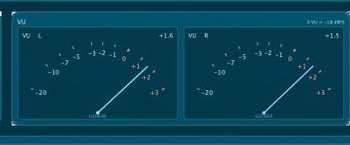

GUIDE
Gain staging: what 0 VU means in dBFS
0 VU is an analogue reference, not a digital one. In a DAW it lands at −18 dBFS (EBU R68) or −20 dBFS (SMPTE RP 155) — and a meter that deflects with voltage, not dB, reads it the way the hardware did.

dBu and dBFS are different scales
0 dBu is 0.775 V RMS. 0 VU is defined as +4 dBu — about 1.228 V RMS on a 1 kHz tone. dBFS has no voltage at all: 0 dBFS is the largest value the converter can store. The bridge between them is a calibration decision, which is exactly why two standards exist.
Two calibrations
| Standard | 0 VU | Where it comes from |
|---|---|---|
| EBU R68 | −18 dBFS | European broadcast convention, the usual DAW default |
| SMPTE RP 155 | −20 dBFS | US post convention, a little more headroom |
Pick one and stay consistent across a project. −18 dBFS leaves 18 dB above the reference before clipping, −20 leaves 20. Neither is more correct; a mismatch between sessions is what causes surprises.
Why the needle is not linear
A VU meter responds to voltage, not to dB. On a −20…+3 VU scale, 0 VU sits at roughly 68.5 % of the arc and the spacing between marks grows towards the top. That is why a VU looks slow near −20 and quick near +3 — and why it matches the way analogue gear was actually driven.
Ballistics, honestly
IEC 60268-17 asks for a rise time of about 300 ms to 99 % of a step. LudensScope uses a second-order critically damped response (ζ = 1.0), which reaches 99 % in about 500 ms with no overshoot, plus input smoothing of 40, 80 or 150 ms (80 ms by default).
It is deliberately slower than the letter of the standard: on modern bus-compressed material a shorter ballistic spends the whole chorus pinned at +3 and tells you nothing. If you want the textbook behaviour, drop the smoothing to 40 ms.
A practical gain-staging pass
- Set the calibration — −18 or −20 dBFS — and leave it for the whole project.
- Put LudensScope on the master bus or the group you care about.
- Play the loudest section and trim the bus so the needle peaks around 0 VU, not above +1.
- Check true peak and keep it under −1 dBTP.
- Compare integrated LUFS with the delivery target.
- If the mix still sounds quiet next to a reference, fix balance and dynamics before raising the ceiling.
Where the guides are drawn
The 0 dBFS, −6, −12 and 0 VU lines are drawn in both the spectrum and the oscilloscope, so the same reference is visible in the frequency and the time view. The gain-staging guides are a PRO feature; the VU meter itself is in the free edition.
Lite is free — one installer, no account, no telemetry. PRO unlocks the reference workflow, gain staging and all seven palettes for €19.